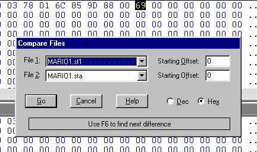
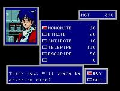

Hacking Save States


Hacking Save States |
|
A Beginning Hacker's Guide |
|
How it WorksEmulators use save states to let the user store their progress in a game. When you load a save state file into an emulator, you can return to your game at the very instant you saved the system state, almost as if you had paused the game. Emulators achieve this by saving all the essential data that the system is processing at the time into a file. When the file is loaded up again, the virtual game system resumes processing the data as if it had never halted. Since the file the emulator saves contains all the essential data about your character, you can make changes to it and have those changes reflected in the game when you return to it. Your number of remaining lives, power ups you have available, or (in RPGs) attack power and other stats are all stored in the file, and all can be changed. It's only a matter of finding which parts of the file contain the data. Here's what you'll need:
Hacking Extra LivesFor our first example we'll be using Super Mario Bros. for our game, Nesticle for the emulator, and Hex Workshop for the editor. The basic idea is to get two or more state files that are nearly identical except for one change - the variable you want to hack. We'll try something simple for now - getting extra lives in SMB.
Two files, mario1.sta and mario1.st1 (depending on the file name of your ROM), should now be saved to your disk. Now:
 Once you know all the bytes that have changed, click on mario1.sta's window in the hex editor. Find the first byte that has changed and edit it to match the byte at the same offset in mario1.st1. Save the changes to the file. Now go back into Nesticle and reload the SMB ROM. Press 0 to select slot 0 and press F7 to load the edited mario1.sta file. Even if you've found the right byte to change, the number of lives remaining won't reflect this just yet. Kill yourself off again so that the black screen is updated, then see what your remaining number of lives says. If the number is still 2 (which it's supposed to be), you haven't found the right byte yet. Go back and find the next byte that has changed, change it to match the same byte in mario1.st1. Save your edits, load mario1.sta into the emulator, kill yourself off again, and so on. When you suddenly find that you have only 1 life left instead of 2, stop! You've found the address you need to edit. (For this example, it was offset 275A.) Now just to be sure you have the right address, edit the same byte to a higher number than before, like 9 or so. Save your work, load it into the emulator, and kill yourself off. The number of lives remaining should read 9. Congratulations! You've completed your first save state hack. Now you can open any Super Mario Bros. .sta file, edit the byte at offset 275A to any value you'd like, and reload it for extra lives.
Hacking RPG InventoriesNext we'll try something a little tougher - changing your inventory in Phantasy Star 2. For this experiment you'll need a Phantasy Star 2 ROM, Genecyst, and of course Hex Workshop. 
The files pstar2.gs0 and pstar2.gs1 should now be saved to your disk. (Again, the filenames depend on your ROM's filename.) Open both in Hex Workshop. This time we're not going to bother writing down all the hex offsets. Now that you have some clue what you're doing, we'll try to save a little time by making a logical guess as to what may have changed. RPG items are usually stored in a game save as single bytes. A potion might have the value 15, a sword the value B7. If there is no item in a particular spot in your inventory, it's usually represented by a 00. So in pstar2.gs0, you have a slot in your inventory that is empty, but in pstar2.gs1, that same slot is taken up by a Monomate. You can reasonably guess that in pstar.gs0 the byte that represents that inventory slot is 00, but in pstar2.gs1, that byte is some value higher than 00. Run a comparison between pstar2.gs0 and pstar2.gs1 in Hex Workshop. Write down only the offsets that have changed from 00 in pstar2.gs0 to a value higher than 00 in pstar2.gs1. There will probably only be one or two.
If you're familiar with Phantasy Star 2, you've probably noticed that the items seem to be getting more and more valuable as the hex value increases. If you keep raising the value, you could eventually wind up with the best weapons and armor in the game. In some games (like Final Fantasy II), it's possible to use this technique to find items that were removed from the U.S. version and aren't accessible by normal means. Once you've hacked an item into the save state, it can be equipped and traded like any other item, too. Next experiment... Go back into the shop and buy all the Monomates you and Nei can carry. Save the game state to slot 0 and open pstar2.gs0 in Hex Workshop. (If you already had it open, you need to close the file and open it again or the changes won't appear. Go to hex offset E4A4. Notice anything different? The bytes surrounding offset E4A4 are all filled with the value 11. You can also see a second string of 11's starting at E4E4. If you'll recall from earlier, 11 is the value for a Monomate. These are all the Monomates you just bought and saved. The second string of 11's is Nei's inventory. Go to all the bytes that just changed to 11, and change them to 1C. (The value for a TitaniGear.) Save the file, and load it in Genecyst. Your inventory should now be filled with Titanigears. You can change any of these bytes you just discovered to any value you want, and get any item you want. These are just a couple examples of your newfound abilities. With a little creativity, you can do anything. Apply this technique to Metroid, and you can use it to get special items right at the start of the game. Try it on Final Fantasy, and you can set any character's maximum HP to any value you want. It'll work on save states for SNES or in fact any system whose emulator supports them. So what're you waiting for? Go test your skills on your favorite game. If you find any useful offsets, be sure to E-mail me at ragegames@mcgavren.com. Good luck and happy hacking! |
|
|